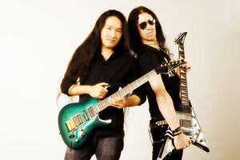

Dragonforce
 De: La Frikipedia, la enciclopedia extremadamente seria.
De: La Frikipedia, la enciclopedia extremadamente seria.
xxx-CustomTitleStart-xxxNintendoforcexxx-CustomTitleEnd-xxx
De la serie Grupos musicales:
Nintendoforce, StudioForce, FrikiForce,taijutsuforce o Dragonforce
Dragonforce Nintendoforce ensayando
| Origen
|
Mundo Champiñon (El chino viene del mundo pokemon)
|
| Tiempo
|
Desde el año 280 D.C. (después de Capcom) hasta el 2015 (?)
|
| Estilo
|
Power Metal Friki Metal, Nintendo Metal, Guitarherocore, Extreme Brutal Super Extra Speed Nintendo Metal
|
| Discográfica/s
|
{{{discográfica}}}
|
| Miembros
|
El yonky (este acaba de dejar el grupo), el gordo, el cabezeador, el vago...errr...bajista, el chin..digo..ponja (mipom vease chino japones), y el otro flipao sobrante.(que no es tan bueno como el chino pero es igual de mierda bueno) El rubio (es el cantante de ahora, y tiene una voz muy maricona buena)
|
| Estado
|
Con un subidón que te cagas defecas
|
| Sitio web
|
http://www.nintendo.com/Nintendoforce
|
«Faraway For Evermore, Endless Sands, The Distand Shore, Faraway Faraway So Farawayyyyy, ohhh ohh oh ohh!»
~ Típica canción de Dragonforce
«turiruriruriruruur rurirurirururu riririr tarán tarán tarán tarán, ahán tarán tarán tarán tarán, ahán»
~ Típico solo de alguna canción cualquiera.
«I'm the only guy in the band who's not gay»
~ Texto de la playera que Herman Li suele usar para disimular sus verdades.
«Nosotros tambien somo parte de Dragonforce Nintendoforce»
~ El gordo, el cabezeador y el bajista en una conferencia.
Nintendoforce es un grupo inglés de power metal formado por un cantante yonky con la mitad de los dientes negros, un baterista gordo que hace lo mismo en todas las canciones, un teclista que mueve mucho la cabeza pero no las manos, un bajista que está porque tiene que haber bajista, dos guitarras, con sus correspondientes marico guitarristas: Herman Li, un chino muy friki y que toca muy pero muy rápido (a la velocidad de las putas 25% mas lento que la de la del sonido pero un 10% mas rápida que la de la luz) y Sam Totman, que no es chino y no toca tan rápido pero también es muy bueno. (en realidad es un puto muerto a comparación de Herman) y el Marc Hudson, que es un puto joven con una voz muy maricona buena, este tio tambien es capaz de pegar unos gritos tan fuertes que se escuchan hasta la casa de ZP Thearth el yonki ( vease marte).
Hay gañanes que dicen que Herman Li es tambien Buckethead, lo cual tiene de cierto que la inteligencia de los canis es superior a la del palo de una escoba, osea nada.
Comienzos
Los comienzos de la banda se remontan a tiempos muy lejanos, cuando los delfines andaban por la tierra y gracias a dios los canis y los pijos todavía no existían.
Todo empezó cuando una nube de gas cósmico colisionó contra un yonki (el cantante) que le estaba intentando robar algo suelto a un gordo (el baterista), el cual iba hacia un bar para reunirse con su amante (el tecladista), que este a su vez se montaba tríos con un chino y otro tipo mas (los guitarristas) o mejor coñocidos como los (guarristas).
Para ver que mierda tocaban empezaron a buscar canciones de cuna (pero las mas lentas) asi podian alentarlas mas y ponerles nombres nuevos como black fire o revolution deathsquad.
Este tipo de canciones empezaron a tocar, primero con Black Fire lo hacian en la cuidad, en la parada del camión y subían a ellos para que al terminar les pagaran con unos cuantos centavillos para comer porque eran muy pobres y no les alcanzaba ni para comer tortillas con frijoles.
 Los
frikis guitarristas del grupo, y los futuros asesinos de daddy joputa

Típica presentación en vivo.
Como no tenían dinero, no podían comprar los instrumentos así que se las idearon tomando cajas de leche y les pegaban un tubo de rollo de papel higiénico encima para simular una guitarra, y les pusieron ligas para las cuerdas, hicieron 2 de estas, otra parecida pero con ligas mas grandes para que sonara más bajo, el gordo tomo cubetas y cajas de zapatos junto con unas cucharas para simular una batería y el otro tío tomó un teclado de computadora de la basura y quién sabe como le hizo que ahora suena como instrumento.
Entonces listos salieron a tocar en el metrobus de la ciudad (Inglaterra) y tocaban aunque no ganaban mucho debido a que tocaban tan lento y como era en vivo era una mierda no le gustaba a nadie y no ganaban nada, hasta que un día se toparon con Mr. Bean y este les dio lugar en su show, nadie sabe que paso desde ese momento, pero no resulto como esperaban, fué entonces que tuvieron algo de dinero, y consiguieron muchas consolas de Nintendo para desestresarse, pero de alguna manera usarían como instrumentos añadiendo sonidos de ese tipo, pero como compraron en grandes cantidades, un agente de Nintendo, Satoru Iwata les ofreció una oportunidad de salir al estrellato, y fué que empezaron a tocar canciones con esos instrumentos y por eso sus canciones se oyen asi.
Todo parecía ir bien, decidieron ponerle nombre a su banda, optaron por ponerle DragonGAY DragonHeart (Corazón de Dragón), pero ya existía ese nombre, así que le pusieron Dragonforce (Posteriormente cambiaría a Nintendoforce), en la actualidad, sabemos que es un grupo de Power Metal Extremo y en vivo es una mierda posiblemente el más rápido del mundo.
Resumen
Se ha confirmado que el yonki abandonó el grupo, si, se fue,pero encontraron un vocalista con voz más maricona mayor registro vocal, cuyo disco perdio velocidad debido a que el chino emepzo a usar un banjo en vez del nintendo y todo se fue a la verga y Sam Totman ha andado bebiendo desde qu empezaron a grabar (Quien sabe, Tal ves nuca termine de chupar); lo cierto es que el vocalista era un gringo fanatico chupa pollas y admirador muy grande de la banda, y como eran pajeros perezos, agregaron a este pendejo chico.
Tambien se sabe que el gordo dejo la banda porque "queria hacer musica progresiva", lo cierto es que el gordo estaba podrido de que no le presten atencion y que toque lo mismo en todas las canciones el gordo queria dedicarse al Rock Progresivo.
¿Cómo componer canciones a lo Dragonforce Nintendoforce?
Este grupo se caracteriza porque todas sus canciones tienen la misma estructura musical:

Así se pone la gente al oír 5 canciones seguidas. O se pone asi --> d(x_x)b
- Introducción
- Riff/Interludio/Solo
- Verso 1
- Pre-Coro
- Coro
- Solo
- Verso 2
- Pre-Coro
- Coro
- Solo
- Grito (Whoooo ooooo oooooooo Whooooo!) (Oohh ohhhhh ohh
FOLLAME DURO ooohhh)
- Solo
- Solo
- Solo
- Solo
- Parte
maricona tranquila
- Coro x2 o 3

El tío que editó las primeras canciones en el estudio
Y después contrataron a este para editar.
Esto hace que todas sus canciones dure más de 6 o 7 minutos, también hay que tener en cuenta otros aspectos para componer sus canciones:
El estudio siempre ayuda en la velocidad - Los coros en los estribillos nunca sobran
- Los solos nunca son demasiado largos
- Nunca hay suficientes efectos para la guitarra
- El batería no debe cambiar de ritmo nunca (bombo-caja-bombo-bombo-caja...)
- Las canciones han de ser todas muy parecidas
- Los riffs muy sencillos, pero en los solos te lo flipas

Ni siquiera a los
animales les gusta esta
mierda música por eso este gato se mocho una de sus orejas
xD- Nunca se toca demasiado
lento rápido
- Nunca han follado
- Nunca hay demasiadas notas en 1 segundo
- La guitarra nunca cuelga suficiente del Floyd Rose (la palanqueta que estira las notas)
- La canción nunca es demasiado larga
- En los solos no pueden faltar guitarras a 2 voces
- Nunca sobra el tapping
- Nunca usan doble pedal en el bombo
- Nunca el tema es demasiado friki
- Nunca hay demasiados solos
- Ya mencione que nunca follaron?
- Siempre se grita despues del segundo verso

Así se bailan sus canciones. El de rojo es el hermano mayor de Edge y su hermano menor hijo de Edge
- Todos los videos deben tener acercamientos de cámara en los solos o un recuadro para ver como
putas tocan hacen sus melodías.
Y no lo olvides, nunca pueden faltar en las canciones las siguientes palabras (por lo menos 2 veces cada una):
- Faraway (indispensable, sin esta palabra, no es
Dragonforce Nintendoforce)
- Forever (O cualquier otra que termine con "ever" o "er" o que rimen, como estas:)
- Never
- Together
- Heaven
- Y otras
- Through (Usa esta palabra para canciones muy largas)
- Palabras que terminen en "ess", por ejemplo:
- Endless (Para canciones mas largas aún, que no tengan fin de preferencia)
- Wilderness (Otra indispensable...)
- Sadness
- Madness
Shitness- Darkness (Siempre que uses esta palabra, procura que esté oscuro
para poder picar gente en los conciertos sin que se den cuenta)
NOTA: A estas últimas podemos agregarles las letras "ly".
- Y no olvidemos estas también:
- Understand
- Hell
- Soul
- Eternity
- Free
- Fly
- Burn
- Fire
- Y muchas más.
Formula para crear tu canción a lo Dragonforce Nintendoforce
Ahora que leíste lo de arriba, sabes "los ingredientes" para crear canciones de estos tíos, ahora, he aquí la formula para usarlos y crear tus propias canciones de Dragonforce Nintendoforce:
Teniendo en cuenta que esto es para sacar el intro, esta operación debe ser efectuada así: eliges tus palabras, luego las duplicas, y le aumentas el numero 23, luego lo agregas a esta operación y lo que te salga, serán los tiempos y los tonos (matemáticamente) y deberás convertirlos de Matemáticas a Música".
Esta otra fórmula es para el primer solo:
Esto es para el solo de Herman Li, para el de Sam Totman solo se invierten sus nombres y se cambian signos positivos por negativos y viseversa solo que es (798\tú)
Discografía
- Toilet of the Shit (Demo) (???? a.C.): Primera obra de estos (la banda se llamaba DragonHeart en ese entonces)
- Toilet of the Shit (Demo Version): Se basó en como consiguieron sus instrumentos y como vivieron su
puta y miserable vida, ademas de crear los Demos con esos instrumentos y se oían de la puta madre los demos
- Revergations (Demo Version): En honor a los miembros del grupo cuando se les rompieron sus instrumentos de cartón y se emputaron y se agarradon a vergazos
Star fucks Starfox (Demo Version): Sin descripción para este tema- Brown Helly Fuck (Demo Version): ¡Joder! ¡Puta Madre!
- Disciples of your mother (Demo Version): Tributo a tí y a tu
puta santa madre
Album cover del primer disco del grupo
- Toilet of the shit (7958 a.C): Este disco tiene sus orígenes cuando Herman Li intentó investigar acerca de adonde iban sus "shits" después de tirar la cadena. Al descubrir que, aparentemente, el agujero no tenía fin, Herman se hizo adorador del WC y decidió crear un disco en su honor.
- Invocation of the Apocalyptic Shit: En esta canción el del teclado redacta una anecdota muy curiosa que le sucedio. Despues de hacer la canción, se dio cuenta de que su música atraía a un grupo de jóvenes jebis, así que pensó en fundar una secta de adoradores al WC.
- Toilet of the shit: Basado en la vida real del chino friki cuando va al baño.
- Black
Obama Fire: Dicen que fue creada esta canción en honor a Obama.
- Brown holy shit: ¡¡¡ A la mierda !!!
- Starfox: En honor a un videojuego de su disquera, osea nintendo.
- Disciples of
Dragonforce Dragonforce: Tributo a ellos mismos debido a que nadie los quiere, se idolatran ellos solos (y ni ellos se gustan)
- Revergations: En honor a los miembros del grupo y su sueño de tener verga (algo que no ocurrira nunca)
- Evening Star Wars: Jar Jar binks
- Heart of a Li: Creada por ZP Threat en honor al guitarrista chino y a toda su especie (vease Herman Li)
- Where Lis rule (Bonus japones): Basada en la canción anterior, esta habla sobre el futuro cuando los Herman Lis dominen el mundo
- Ultrasonic Shitstorm (1456 a.C.d.c antes de Comer y despues de cagar):
Album cover del segundo disco del grupo.
- My cock will cum on:
- Fury of the cock: En honor a un Dragon que los violó, ya que lo hizo con mucha furia y entonces le dedican esta canción.
- Springfield
s of Despair:
- Game Over in Mario World: En honor al chino que no pudo pasarse el juego de Super Mario World.
- Adobe
flash player the Winter Moonlight:
- Shitters of the toiletland:
- Prepare for fuck: Esta canción la inventó el cantante en honor a el grupo, "preparence para follar" cosa que nunca va a pasar.
- Once veces en la vida: La única canción en español
- Cry of Johnny Bravo (Bonus Japones): Tributo a Johnny Bravo

Album cover del tercer disco del grupo.
- Inhuman Shit (1520 d.c): En honor a una anécdota de este tío
- Through the shit and Excrement: Creada por el mismo tío al que le dedicaron este disco, debido a su anecdota de mierda (me refiero a que hubo mierda, no que haya sido una) y sobrevivió y aquí nos cuenta su historia. (También es usada en un videojuego donde supuestamente tocas la guitarra, pero debido al nombre, le cambiaron las palabras para no causar polémica).
- Revulvation Deathsquad:
- Shocking my Fucking Dick:
- Operacion cock and fuck:
- Body Shitdown:
- Shit for eternity: Esta canción se la dedica ZP Theart a todos los que tengan diarrea o chorrillo para que no se sientan tan jodidos, puesto que no se puede cagar eternamente (amenos que seas tú).
- The Shit of youth:
- Toilet of the broken poops:
- Lost Shit in Endless Toilet (Bonus Japones): Basado en "Toilet of the shit" puesto que por no tener fin, un pedazo de excremento albino se le escurrio a Herman Li por el váter y lo perdió, ya que el coleccionaba mierda y obtuvo una de color blanco, pero ya se fue y está cancion es para recordar.
Album cover del cuarto album del grupo.
- Ultra Vergon (1912 d.c): En honor a Chuck Norris y su Ultra Polla
guitar heroes of our time: Una de sus mejores canciones, salen colocados de speed como no?- The Shit still Stinks: Creada por Herman Li, basandose en su colección de mierda la cual se estaba cecando, pero aún apestaba.
- Reasons to use Windows Live: "Esta cancion cuenta, segun
Dragonforce Nintendoforce, para que usar Windows Live: Para clavarse pajas con porno gay de negros para editar canciones
- Heartbreak Carmageddon:
- The last jorney of homer: Dedicada a Homer Simpson.
- A Smell Of Shit: Basada en la canción "The shit still stinks"
- Inside the Winter moonlight
ay asi no va:
- The Cock Outside: "Dedicada a un tio de afuera que se violo a Sam Totman, por eso le pusieron asi
- Strike one, strike two, strike of The shedinja (Bonus japones):
- Fuck for Tomorrow (Bonus japones):
- A.T.M. (Bonus japones): Algunos fans dicen que está
A Toda Madre. muy buena.
- The Posser Within (Su"> Esta Verdadera Naturaleza) (7970 d.C):
- Holding On
the penis
- Fallen Tits
- Cry Browser (ft. Mario Bros)
- Give Me The Money
- Tits Of Liberty
- Seasons (fueron demandados por Vivaldi)
- Heart of the Whore
- Die by the Penis
- Last man stands
after fucking
- Seasons "Acustico"(Jodiendo a Vivaldi, despues de ganar el juicio)
- Cry Browser "vivo"(a la mierda Mario Bros.)
- Heart of the bitch "coro alternativo"(version para putas,para que nos e enojen tanto)
- Avant la Tempete"instrumental"(que creias? que iban a cantar en frances?)
- Power of the monja sword(despues de las putas , venian la monjas.
- LEGO Marvel Maximum Overload (Dedicado a los creadores del LEGO Marvel) (9999 d.C):
- The
LEGO Game
- Shit´s Kings
- More More Hicieron reggeaton
- Three Hammers
Of Shit
- Synphony Of Shit
- My Ass Is Dead Cancion creada por Herman Li despues de cagar un sorete que le rompio el orto
- Defenders
Of Shit La banda hizo esta cuando intentaron tirar por la cadena la mierda de Herman Li
- Shit Zone
- City Of Shit "Cancion que cuenta la ciudad de soretes que hizo Herman Li"
- Shit On Fire Cuando a Herman Li se le prendio fuego la casa lo primero que vio fue un sorete en fuego... a noo, esta es de Jhony Cash
- Power And Shit
- You Are My Whore
- Chemical Semen
- Shits Ends
- Fuck To Be Free
- Galactic Shit Domination
Entrevista
Tipicos
fans de la banda (el de la izquierda eres tú,
cabrón).
Esta es una entrevista hecha por tí (aunque digas que no lo hiciste) hacia el yonki ZP Theart:
- Tú: Hola
- ZP Theart: Hola
- Tú: ¿De dónde eres realmente?
- ZP Theart: Dicen que soy de sudafrica, en realidad soy de Para guay
- Tú: Y ¿Dónde está Paraguay?
- ZP Theart: It's so Far away.
- Tú: ¿Te gusta tu trabajo?
- ZP Threat:
Pues, la verdad preferiría trabajar en McDonalds yeahhh!!!
- Tú: Si pudieras cambiar algo del grupo, ¿qué sería?
- ZP Theart:
Todo. Es una puta mierda. Nada. El grupo no podría ser mejor.
- Tú: ¿Qué es lo mejor que hacen en los conciertos?
- ZP Theart: Lo mejor que hacemos es caernos del escenario, y hacer pelotudeses a parte de tocar.
- Tú: ¿Qué harías si el grupo se desvaneciera?
- ZP Theart: Fly free for evermore.
- Tú: ¿Y si tu casa se quemara?
- ZP Theart: Through the fire and the flames we carry on.
- Tú: ¿Firmaste algún contrato forzoso con la disquera?
- ZP Theart: Yeahhh
- Tú: ¿Por cuánto tiempo?
- ZP Theart: For evermore
- Tú: Bueno, es todo porque no tenía nada mejor que hacer.
- ZP Theart: So farrr awayyyyy.
Despues de esta entrevista, ZP se dió cuenta que este genero musical no era lo suyo, por lo que abandonó el grupo para dedicarse a cantar villancicos, por otra parte, el tío entrevistador sufrió convulviones irreversibles y dejo de pronunciar palabras a excepcion de "forever", "far away" y mas.
¿Sabías qué...

El chino mostrando uno de sus 200 dedos
- Ellos no usan guitarra ni teclado, todos los efectos los hacen con sus consolas de nintendo?
- El bajista tiene la mano mas grande que Donkey Kong?
- El
nintendista guitarrista tiene 200 dedos en cada mano y solo toca con uno?

La primer guitarra real que usaron
Después usaron esto como instrumento
- El baterísta tiene 17 pies y 15 brazos?
- Su lema es "no somos muy rapidos, ustedes son los lentos"?
Dragonforce Nintendoforce se lían entre ellos despues de los conciertos?- Todavia juegan al Smash Brawl y si juegas wi-fi te los encontraras y no le ganaras a ninguno, sobretodo al chino con su exceso de dedos puede practicar contra si mismo jugar el con 3 personajes a la vez?
- En sus conciertos solo tocan entre 6 y 9 canciones?
- Sus canciones son todas iguales, por eso tocan 6 canciones?
- Graban en video como
putas hacen su album?
- El chino hace artes marciales y te puede matar de una patada?
- Se puede romper el espacio/tiempo si tocan a toda velocidad?
- Lo otro solo puede pasar en el estudio
- Casi todas sus canciones son de cuna o de algun videojuego?
- En el video de The Last Journey Home muestran como era su miserable vida?
- En el video tambien muestran como les roban los teclados?
- Por lo anterior no pudieron tocar en vivo?
- Si intentas atacar al chino te tira un poder desconocido que te hace mierda? (VER VIDEO The Last Journey Home)
- Fueron demandados por Vivaldi?
- Si no fuera por el giitaarrr jjiirroouuww no serian famosos?
- Uno de sus musicos se perdio en la grabacion de su segundo album?
- El nuevo cantante tiene muchas fanaticas, haciendo posible la existencia de un segundo Justin GAYberg?
- Los demas musicos quieren matar a los guitarristas?
- El bajista es ultra requete satanico?
- El baterista es tan gordo que no entra en su bateria?
- Al momento de grabar sus discos usan grabaciones hechas antes?
- El tecladista no toca mucho los teclados, pero lo poco que toca lo hace a una velocidad mayor a la de la luz?
- Si tu papa/mama escuchan
Dragonforce Nintendoforce van a pensar que son todos iguales?
- El baterista te puede romper los oidos con su velocidad?
- El chino te puede matar tocandote con su
nintendo guitarra?
- El vocalista tiene la voz mas grave que Vicente Fox Quesadilla?
- el bajista sufre combustiones espontaneas?
- el guitarrista no lo sabe pero en realidad es dos enanos uno encima de otro?
- El chino que no es chino y que es japones, tampoco es japones, es un indigena disfrazado con cinta adhesiva en los ojos para parecer chino?
- El Chino puede tocar todas las canciones con una nalga?
- Y Con la otra también?
- Y Con la otra?
- Efectivamente, el Chino tiene 3 nalgas?
- Si tiene 3 nalgas, entonces tiene 2 ojetes? algo así ---> ( ).( ).( )
- Mario participó como vocalista para
Dragonforce Nintendoforce?
- El Chino también tiene 2 pollas?
- Y 4 cojones?
- Y toca con ellos también?
Dragonforce Nintendoforce hace conciertos privados para fiestas de XV, bodas y hasta velorios?- La familia del Chino tiene entradas gratis para ir a verlo tocar con una nalga?
- ...Tienen 50 teclados eléctricos atrás de el escenario para hacer los solos de guitarra?
- Todos sus temas son iguales?
- El diablo escucha
Dragonforce Nintendoforce?
Dragonforce Nintendoforce toca en universidades?- Si pones algunas canciones a las 12 de la mañana un Miercoles 29 de Febrero los invocas?
- Si tomas 10 posiones de velocidad en Minecraft y haces seis casas IGUALES spawnean ellos con 500 corazones y Herman Li con 100000000 corazones?
- Solamente
Dragonforce Nintendoforce puede matar a Chuck Norris?
- ...Solamente mencionan la palabra "Dragon" en 4 canciones? El resto solo dicen "Faraway" "Evermore" y otras mas
Curiosidades

Otro típico fan (aunque es de una especie diferente a los de más arriba).
- El cantante es de sudáfrica y es blanco
- El cantante no se lava los dientes, por eso la mitad son negros
- Herman li no puede pasarse la de through the fire and flames en gh3, pero si la toca en guitarra real.
- Herman Li es zurdo y toca con la derecha.
- Herman Li dominará el mundo antes que todos debido a su velocidad
(claro, solo lo dominará en el estudio)
- Inventaron un nuevo genero, el Nintendo Metal, debido a eso fueron demandados por Nintendo y están en bancarrota.
- Lo anterior es mentira, puesto que Nintendo fue quien los contrató.
- En su tiempo libre suelen viajar en taxi visitando cualquier ciudad del mundo, así que no te sorprendas si un día los ves cerca tu casa.
- Herman Li puede decir el himno de Hong Kong con el sobaco (Zhōnghúa Rénmín Gònghéguó Xiānggǎng tèbié Xíngzhèngqū Gÿddsñeng lang gO0nñya gñaaa).
- Dicen que tuvieron un baterista que estaba en una banda desconocida, 2 bajistas sin identidad y un tecladista que tampoco se sabe quien es..
- Herman Li y Sam Totman estaban en un demo de
Dragonforce Nintendoforce, llamada Demoniac, una banda de Brutal Power Extreme Nintendo.
- En vivo tocan 7, 8 o 9 canciones (
porque el resto son todas iguales porque les gusta tocar pocas canciones).
- El chino y Sam Totman estuvieron en una publicidad de una aplicación para
Nintendo, para eso tuvieron que componer una cancion llamada "Galactic Shit Domination" (y es igual de mierda que las otras y es una cancion muy buena).
Véase también
Enlaces externos
Autor(es):
- Krusher
- Fordus
- Aque
- Alex2610
- Roms
- Niko
- Khazike Khashondo
- Yirx
- ElInventor
- El Sevillano
Frikipedia 2005-2016, Licencia
GFDL 1.2 - Extraído por FrikiLeaks